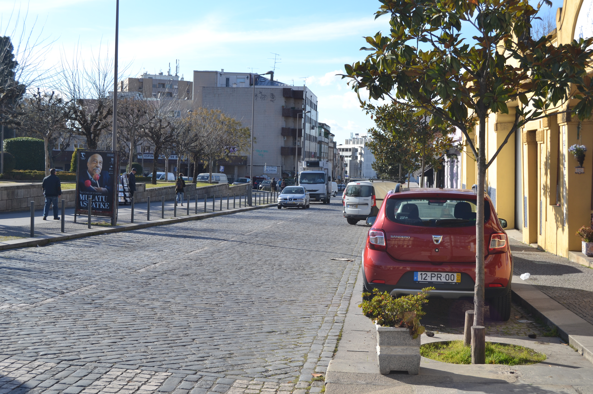

Estrada de Real
Imagens antigas:


Imagens atuais:

Descrição:
Longa via, talvez decalcando a velha estrada romana, saía de Braga, por terrenos que pensamos ser coincidentes com os da actual rua Andrade Corvo, em direção á freguesia suburbana de S.Jerónimo de Real. Braga, por terrenos que pensamos ser coincidentes com os da actual rua Andrade Corvo, em direção á freguesia suburbana de S.Jerónimo de Real.
Em 1750, todas as suas casas (3 do lado Norte e 15 do Sul) eram foreiras ao Cabido e incluiam-se no prazo da Quinta da Cónega. 1750, todas as suas casas (3 do lado Norte e 15 do Sul) eram foreiras ao Cabido e incluiam-se no prazo da Quinta da Cónega.
Eram, naturalmente, construções muito pequenas, muito simples, de um só piso (excepto 2), e do tipo de porta ladeada por janela. Estes edifícios inscreviam-se apenas no extremo Oeste da rua: o restante espaço estava ocupado apenas com campos de cultivo.
Lista das casas
-
Número 1 Enfiteuta ??? Foro ??? Descrição Campo do prazo da Quinta da Cónega(freguesia de S.Pedro de Maximinos). Quinta da Cónega(freguesia de S.Pedro de Maximinos).
-
Número 2 a 20 Enfiteuta Sebastião de Faria Gusmão, enfiteuta principa da Quinta da Cónega. Foro ??? Descrição Pertencem à Quinta da Cónega, a cujo enfiteuta se paga foro. O nº17 confronta, do poente, com o caminho que vai para a Quinta do Real. Quinta da Cónega, a cujo enfiteuta se paga foro. O nº17 confronta, do poente, com o caminho que vai para a Quinta do Real.
O nº18, confronta, do poente, com o caminho que vai junto da Curutelapara a cangosta do Pópulo. Curutelapara a cangosta do Pópulo.
-
Número 21 Enfiteuta ??? Foro ??? Descrição Corresponde a um campo do prazo da Quinta da Cónega. Confronta, do nascente, com a casa nº22 da Rua da Cónega. Quinta da Cónega. Confronta, do nascente, com a casa nº22 da Rua da Cónega.